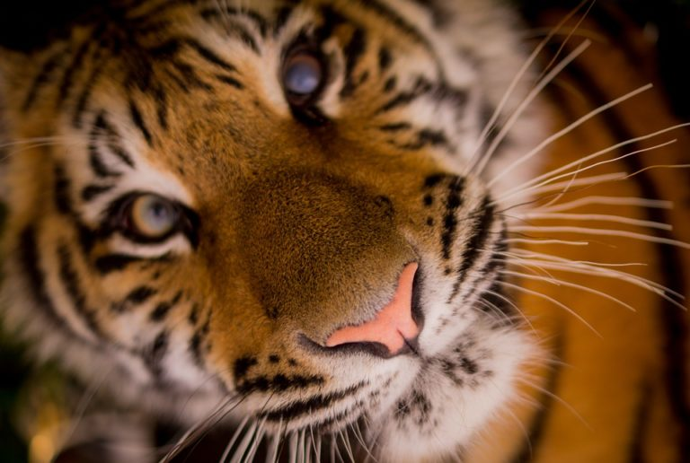

LES ANIMAUX EN VOIE DE DISPARITION

Le terme de disparition désigne, dans les domaines de la biologie ou de l’écologie, l’extinction d’une espèce ou d’un groupe d’espèces.
S’il s’agit d’un processus relativement commun dans l’histoire de l’espèce animale sur Terre (les dinosaures par exemple, il y a 65 millions d’années), un facteur en particulier accélère la situation : l’intervention humaine.
Au cours des 5 derniers siècles, l’Homme a causé l’extinction de plus de 800 espèces !
Selon les données officielles, environ 5000 espèces sont en voie de disparition, les effectifs ayant considérablement augmenté au cours des 10 dernières années.
L’ensemble du règne animal est en état d’alerte, des mammifères jusqu’aux amphibiens, en passant par les invertébrés.
Voici une courte liste des animaux tristement emblématiques de cette situation.
Le tigre est l’un des animaux les plus menacés dans le monde, chassé pour sa fourrure, ses yeux, ses os et même ses organes.
Sur le marché illégal, sa peau peut coûter jusqu’à 50.000$.
La chasse et la perte de son habitat sont les principales raisons de sa disparition.
Les tortues : présentée comme la plus grande tortue du monde, la tortue Luth, est capable de nager dans le monde entier, des tropiques jusqu’aux régions polaires.
Elle profite de cette grande tournée pour se mettre à la recherche d’un nid et de nourriture pour ses petits.
Mais depuis les années 80, sa population est en chute libre, passant de 150.000 à 20.000 spécimens recensés.
Les tortues confondent souvent les plastiques flottant dans l’océan avec de la nourriture, qui finissent par provoquer leur mort.
L’éléphant de Sumatra est un animal majestueux mais l’une des espèces les plus menacées de tout le règne animal.
En raison de la déforestation et d’une chasse incontrôlée, il risque de disparaître au cours des vingt prochaines années.